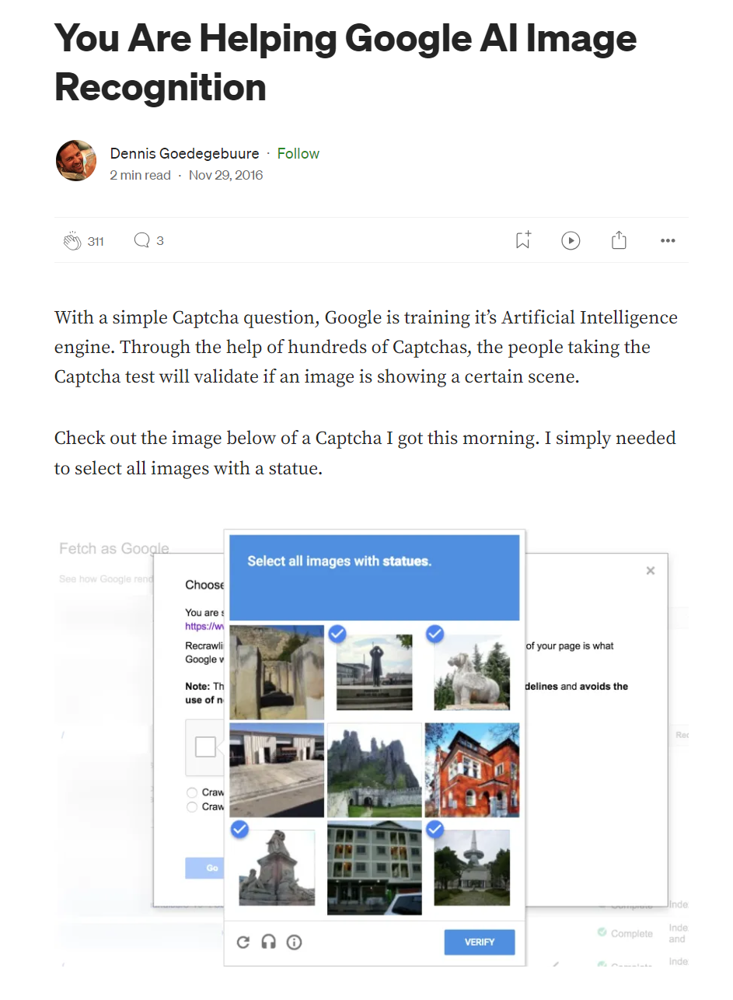
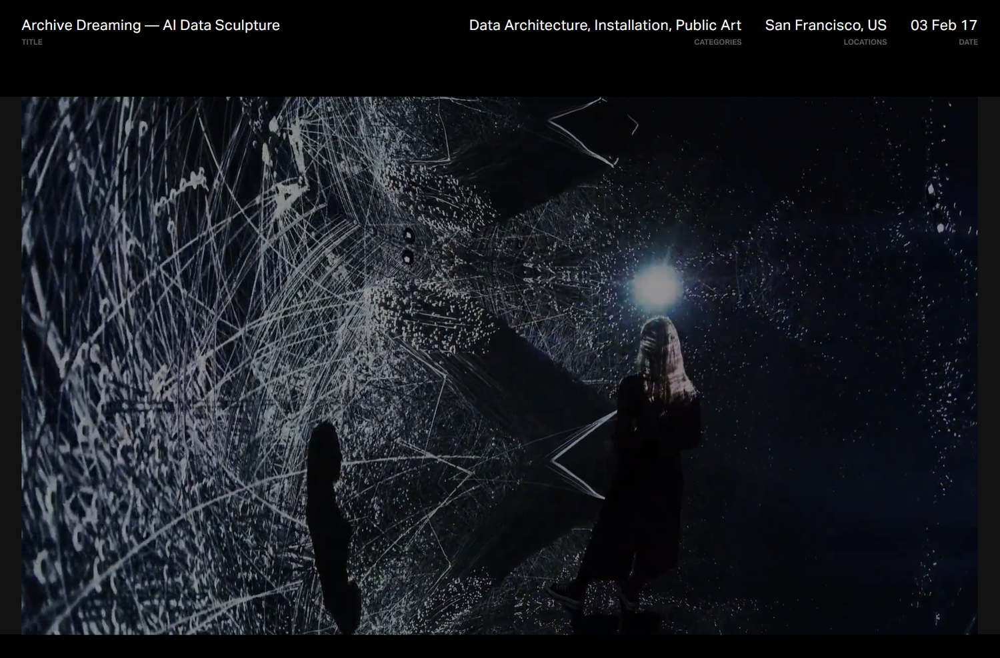
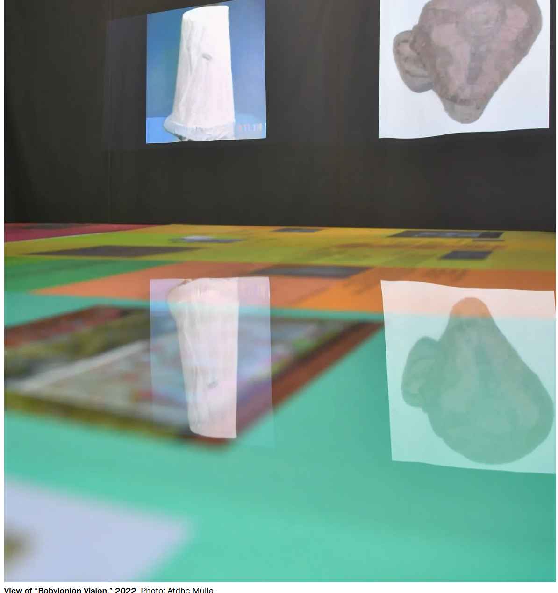
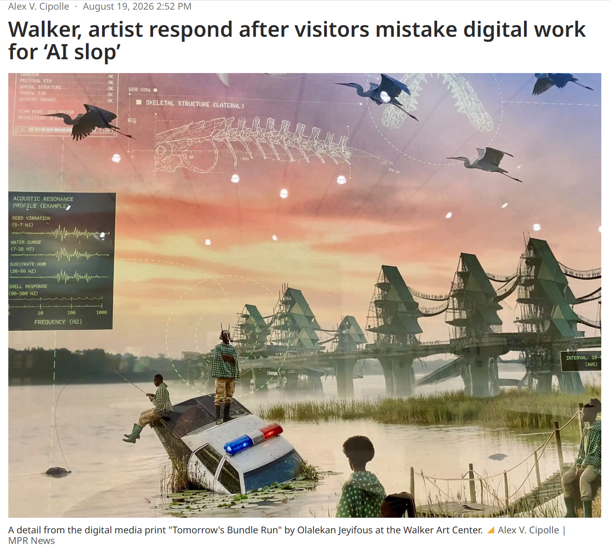
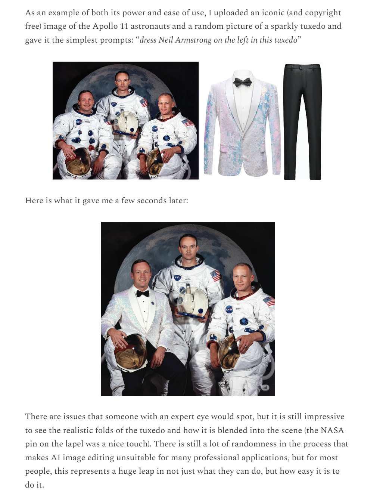
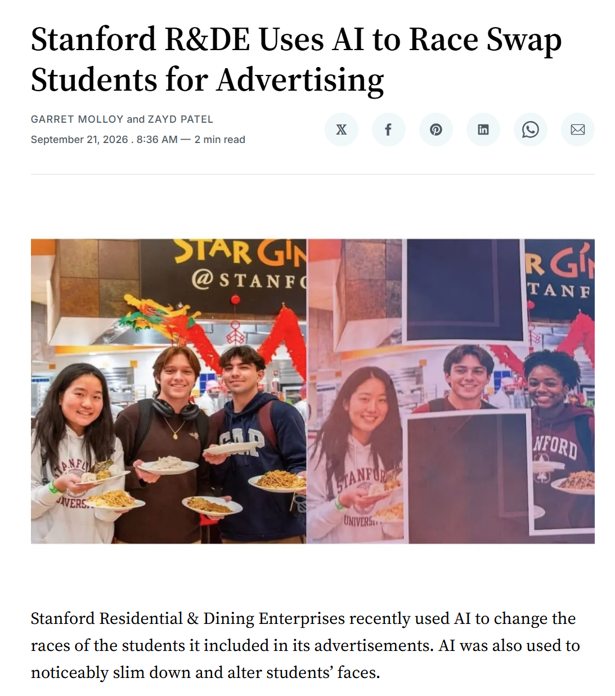
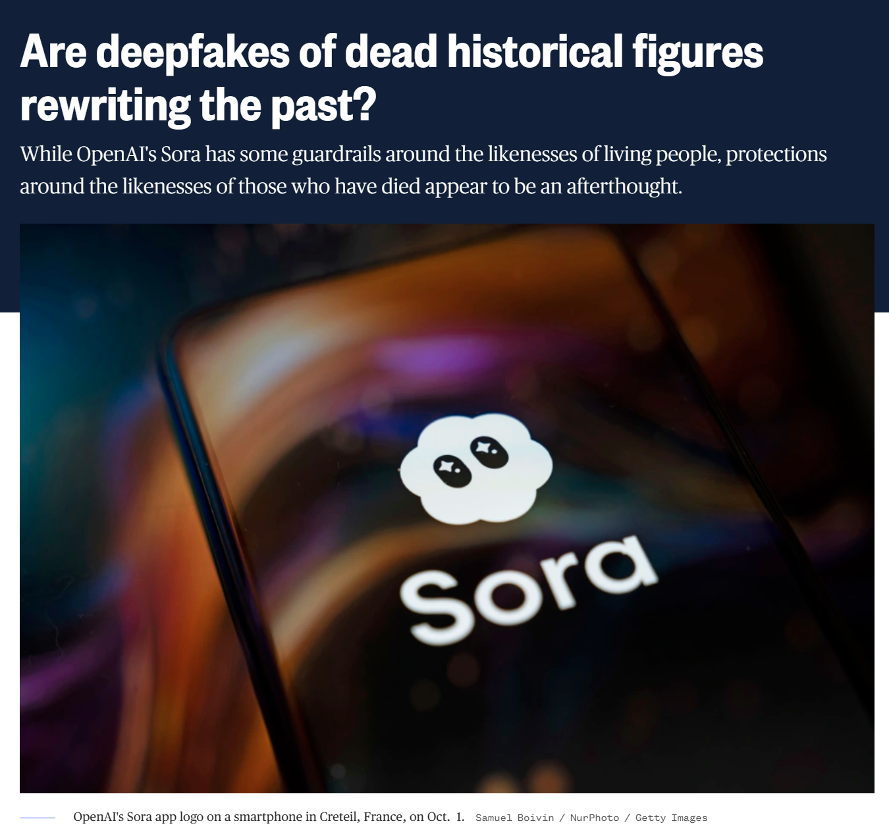

Module Five
> ENG 3861 // MAR 8 – MAR 28, 2027_
Building a digital collection, one page at a time
Data as well as the data that describe those data are considered in scope. For example, images and the metadata, finding aids, and/or catalogs that describe them are equally in scope.
Collections as data designed for everyone serve no one. Specific needs inform collections as data development.
Crawford and Paglen dig into ImageNet
Images do not describe themselves. This is a feature that artists have explored for centuries. Agnes Martin creates a grid-like painting and dubs it “White Flower,” Magritte paints a picture of an apple with the words “This is not an apple.” We see those images differently when we see how they’re labeled.
There’s a kind of sorcery that goes into the creation of categories. To create a category or to name things is to divide an almost infinitely complex universe into separate phenomena.

Every captcha is a labeling job: you classify images for AI training source
The human labor behind labeled training data source
These gradients have been erased in the logic of ImageNet. Everything is flattened out and pinned to a label, like taxidermy butterflies in a display case.
Regardless of the supposed neutrality of any particular category, the selection of images skews the meaning in ways that are gendered, racialized, ableist, and ageist. ImageNet is an object lesson, if you will, in what happens when people are categorized like objects.
AI classification in an Orlando backyard. Is that really a hummingbird?

Refik Anadol's Archive Dreaming (2017): an archive turned into an AI installation source

Nora Al-Badri's Babylonian Vision: a model trained on museum collections source

At the museum: real digital art mistaken for AI source

One prompt, and a historical photograph is altered

Real photo, altered ad: AI rewrites who appears in the record source

Deepfaked history: generated video of people who have died
The whole endeavor of collecting images, categorizing them, and labeling them is itself a form of politics, filled with questions about who gets to decide what images mean and what kinds of social and political work those representations perform.
The scale of some collections may also obfuscate what is hidden or missing in the histories they are perceived to represent. Cultural heritage institutions must be mindful of these absences and plan to work against their repetition.
watch the video, then do the exercise and post by Thursday
step 2, one image at a time
> Describe this image in detail. Then write alt text for it (under 150 characters), and suggest a title, an approximate date, and five subject keywords as if you were cataloging it for a library.Would you trust this AI's alt text if you depended on a screen reader?
Post: 3 AI descriptions + catalog links (3 pts), a 250+ word reflection (4), one citation (1), two replies (2).
Documentation must also attest to the history of how the collection has been treated over time. While no documentation can be fully comprehensive, incomplete or in-progress documentation is better than no documentation.